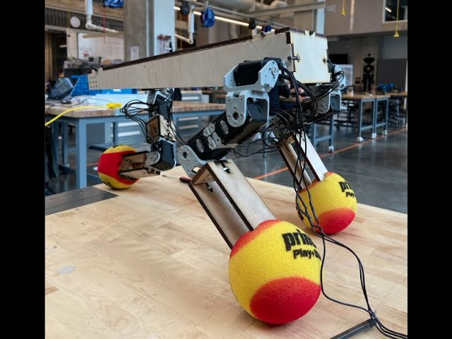

Carnegie Mellon University · 2020–2022
Carnegie Mellon University · 2020–2022
CMU projects.
Graduate robotics at Carnegie Mellon — NASA-sponsored research on robotic post-processing, plus core graduate coursework in computer vision and SLAM. My two biggest projects from this time, MoonRanger and Tripawd, have their own pages.

Featured projects
MoonRanger — lunar micro-rover perception →
Software perception for one of the first truly autonomous micro-rovers targeted for the lunar surface. Worked on the stereo reconstruction pipeline, building tooling to dump disparity data to disk for offline inspection of failures that aren't visible in real time.


SLAM (16-833)
Robot localization with particle filters
Global localization for a lost indoor robot in Wean Hall using only odometry and a laser rangefinder against a known map. Implemented Monte Carlo localization — a non-parametric recursive Bayes filter — and validated it across three robot datasets.
Dense SLAM with point-based fusion
Dense surface reconstruction fusing per-frame depth into a global point-based map.